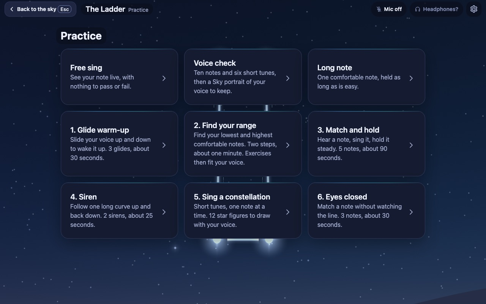
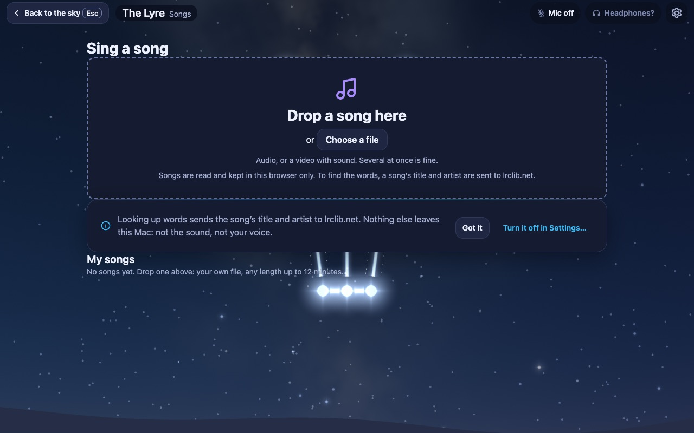
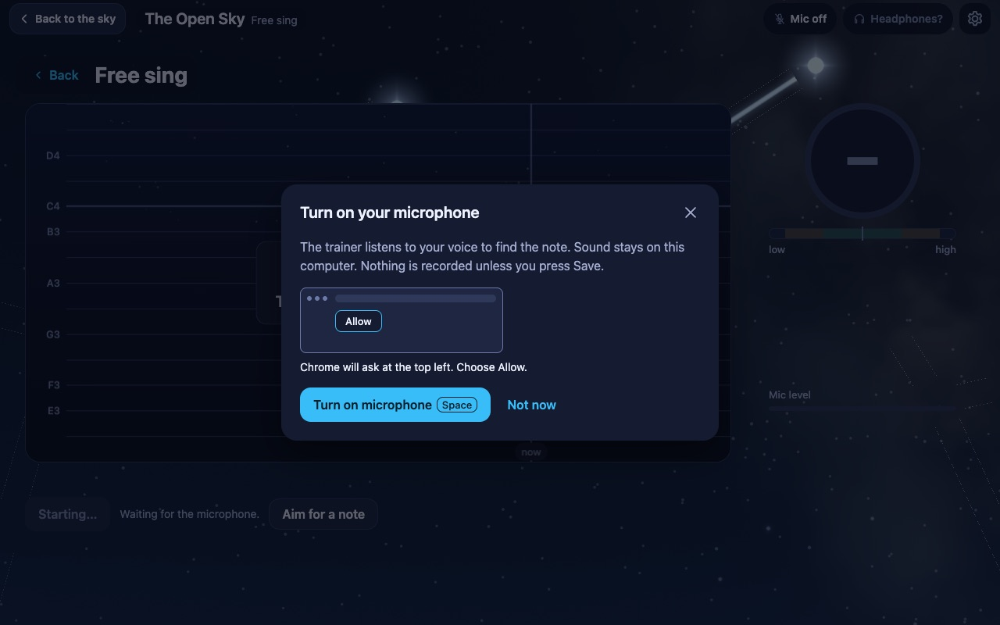

Personal project · 2026 · Live
Music Trainer
A free, private singing coach that runs in the browser. Sing into the microphone, see the note you are on, practise matching and holding notes, and sing along with songs you bring yourself, all under a real night sky that your practice lights up.
- Role
- Owner & director of an AI-agent team
- Built
- Oct 12–15, 2026
- Stack
- JavaScript, Web Audio, three.js, ONNX Runtime Web
- Tests
- 859 unit tests · 39 browser test labs

Why I built it
I want to learn to sing. Paid singing apps cost roughly $60–120 a year and centre on songs and scores; what I wanted was a free, private tool that shows the raw pitch line, measures how steady a note is and explains in plain words what went wrong.
What it does
- Free sing: the note you are on, drawn live on a scrolling stage as a ribbon of light.
- Practice: a voice check, find your range, glide warm-ups, sirens, match and hold, long notes, an eyes-closed round, and "sing a constellation", where each held note lights the next star of a figure. Every exercise stays inside your measured range.
- Sing along with your own songs: drop in a file and the app separates the singer from the music on your computer, finds the tune, looks up the words, and lets you set the Music and Singer volume separately. Public-domain demo songs mean there is something to sing at once.
- Coaching and progress: plain tips after each round (drift, wobble, how you start a note), a letter grade for songs, a five-minute daily session and a record of your practice.



How it works
- Listen: the microphone is opened with echo cancellation, noise suppression and auto gain turned off, because they damage a sung note; the app then checks what the browser really applied.
- Find the pitch: a pitch detector (pitchy, McLeod method) reads each audio frame. When a frame is not clearly voiced, it reports no note instead of guessing.
- Analyse a song: in the browser, HTDemucs separates the singer from the backing and SwiftF0 reads the tune. The models download only after you press for them.
- Draw: three.js renders a dome of 8,920 real stars and 88 constellation figures, rotated for your time and place.
Hard parts
- A microphone you can trust: it must never stay on after you look away. Every screen is tested to make zero microphone requests on load and leave zero live tracks when you pause, open a sheet, press Esc or leave. Testers found a family of "press, then leave" timing bugs, and each was fixed with a failing test first.
- Calm light: a planetarium that flashes would hurt a tool for calm practice. I measure the brightness change of every patch of screen and keep it under a fixed flash limit, and the sky draws in under half a millisecond per frame.
- A note that doesn't sound robotic: beginners match a voice more easily than a beep. A soft synth and a shaped "oo" still sounded artificial to me, so the default is now real recorded "oo" samples.
How I built it: directing an AI-agent team
I ran this project as the lead of a small team of AI coding agents (Claude), each with one job: research, design, building, breaking things, testing and keeping the record. I set the goals and made the product calls; agents built in separate branches, and nothing was merged until a single command (859 unit tests plus 39 browser test labs in headless Chrome, with fake microphones and muted sound) came back green.
What I learned
How digital audio and pitch detection work, how to run machine-learning models in the browser, and how to lead a team of AI agents with clear rules: tests before merges, honest numbers, and privacy as a hard requirement rather than a setting.
Honest limits and what's next
Almost all of the measurements so far use synthesised voices, so coaching thresholds are first guesses until they are calibrated on real singing. Next: recording and replaying free-sing takes, a reference note in your own recorded voice, and later a piano mode for an acoustic grand piano.
Privacy
No accounts. Your voice and song files never leave your computer; looking up the words sends only a song's title and artist, and can be turned off in Settings.